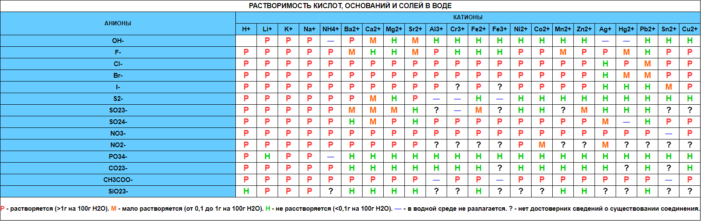

Таблица растворимости кислот, оснований и солей в воде
Автор: Семён Незнаев | Возрастное ограничение 6+ | 23.06.2020По таблице растворимости можно определить, как поведёт себя вещество в соляной или кислотной среде, возможно ли появление осадка.

Таблица растворимости кислот, оснований и солей в воде экспортированая в формат xhtml
- Для того, чтобы проверить растворимость химического соединения в воде, составляем его из пересечения столбца и строки, и читаем символ на их пересечении.
- Растворимость — способность вещества образовывать с другими веществами однородные системы — растворы, в которых вещество находится в виде отдельных атомов, ионов, молекул или частиц.
- Растворимость выражается концентрацией растворённого вещества в его насыщенном растворе либо в процентах, либо в весовых или объёмных единицах, отнесённых к 100 г или 100 см³ (мл) растворителя (г/100 г или см³/100 см³).
- Растворимость газов в жидкости зависит от температуры и давления. Растворимость жидких и твёрдых веществ — практически только от температуры.
- Абсолютно нерастворимых веществ несуществует, поэтому название нерастворимые условно и нужно читать "практически нерастворимые".
- Растворимость веществ зависит от температуры зависит от температуры и давления, так, например, вещество KNO3 (нитрат калия) при температуре +20°C имеет растворимость 31,6 г / 100 г воды, а при температуре +100°C - 245 г / 100 г воды.
Скачать таблицу: Тык